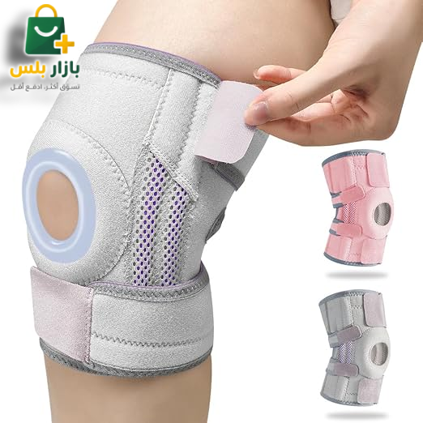

🆕 وصل حديثاً

سعر العرض الخاص:
اطلب الآن والدفع عند الاستلام
239 د.ل
380 د.ل
معرض الصور وتفاصيل المنتج
.png)
.png)
.png)
.png)
.png)
.png)
⏰ العرض ينتهي قريباً جداً!
45ثانية
:
22دقيقة
:
03ساعة
تبقى 4 قطع فقط في مخزن طرابلس اليوم!
مشد الركبة الداعم ذو الـ 4 أحزمة
أقصى مستويات التثبيت والدعم للأربطة والغضاريف!
القصة والهدف
لماذا تختار مشد الركبة الداعم ذو الـ 4 أحزمة؟
عندما تحتاج ركبتك إلى حماية صارمة وثبات كامل نتيجة إصابة سابقة أو ضغط بدني مستمر، فإن مشد الركبة ذو الـ 4 أحزمة والمدعم بالمثبتات الجانبية هو خيارك الأمثل. يتميز هذا المشد الطبي المتطور بوجود دعامتين زنبركيتين مرنتين على كل جانب، مما يمتص الصدمات بشكل كامل ويقلل الحمل على الأربطة الجانبية والصليبية والغضروف الهلالي أثناء الجري أو القفز.
على عكس المشدات التقليدية التي تنزلق باستمرار، يحتوي هذا المشد على أربعة أحزمة تثبيت مرنة وقابلة للتعديل تلتف بزاوية 360 درجة حول الساق لتمنحك ضغطاً محكماً وثباتاً لا يتزحزح طوال فترة تمرينك أو حركتك اليومية.
4 أحزمة تثبيت
مثبتات جانبية مزدوجة
فتحات تهوية جانبية
سهل الارتداء والخلع
المميزات والفوائد
أهم مزايا مشد الركبة الداعم:
- مثبتات جانبية مزدوجة مرنة: دعامات زنبركية داخلية مدمجة تدعم الأربطة الجانبية دون أن تعوق حركة الركبة الطبيعية.
- 4 أحزمة شد قابلة للضبط: تمنحك إحكاماً تاماً وتمنع التفاف أو انزلاق المشد نهائياً أثناء الجري أو اللعب الشديد.
- فتحات تهوية جانبية: نسيج مفرغ يسمح بخروج الحرارة الزائدة ويمنع تراكم العرق أو الحكة والتهيج.
- حلقة لحماية الرضفة: وسادة ناعمة تحيط بالصابونة لامتصاص الاهتزازات وتقليل الاحتكاك.
من يستفيد من هذا المنتج؟
من يحتاج هذا المنتج ومتى تستخدمه؟
- الرياضيون في الصالات والألعاب الجماعية: (كرة القدم، السلة) لتقليل فرص حدوث تمزقات الأربطة أو الالتواء.
- مرحلة ما بعد التعافي: كدعم طبي ممتاز بعد العمليات الجراحية أو إصابات الأربطة الجانبية.
- لممارسي الجري والمشي لمسافات طويلة: الذين يعانون من آلام حادة أو عدم توازن في مفصل الركبة.
المواصفات الفنية
المواصفات والتفاصيل
- المثبتات الجانبية: دعامتين معدنيتين مرنتين (زنبرك) مخفيتين في الجوانب.
- الرباط: 4 أشرطة فيلكرو لاصقة عالية التحمل وقابلة للشد.
- المقاس: مقاس موحد مرن قابل للتعديل بالكامل (Free Size).
تقييمات زبائننا في ليبيا
الأسئلة الشائعة
ما فائدة وجود 4 أحزمة تثبيت؟
وجود 4 أحزمة متقاطعة يمنحك دعماً مضاعفاً وإحكاماً تاماً حول مفصل الركبة بالكامل (فوق وتحت وجانبي الركبة)، مما يمنع انزلاق المشد نهائياً أثناء الحركة أو التمارين الشديدة.
هل يحتوي المشد على دعامات حديدية؟
نعم، يحتوي على مثبتات زنبركية مرنة (Dual Stabilizers) على جانبي الركبة. هذه الدعامات توفر دعماً جانبياً ممتازاً للأربطة الهلالية والجانبية دون أن تعوق حركة الانحناء الطبيعية للركبة.
كيف يتم تنظيف المشد؟
يُنصح بغسله يدوياً بماء فاتر وصابون لطيف، ويُترك ليجف في مكان جيد التهوية بعيداً عن أشعة الشمس المباشرة لضمان الحفاظ على متانة الأشرطة اللاصقة.